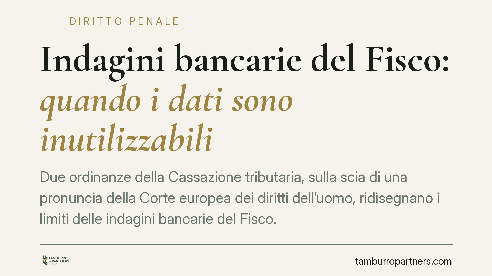

Indagini bancarie del Fisco: quando i dati sono inutilizzabili
Due ordinanze della Cassazione tributaria, sulla scia di una pronuncia della Corte europea dei diritti dell'uomo, ridisegnano i limiti delle indagini bancarie del Fisco. Il principio è netto: senza un'autorizzazione preventiva, motivata e controllabile, i dati acquisiti sui conti del contribuente non possono fondare l'accertamento. Un passaggio che tocca la riservatezza finanziaria e la tenuta delle rettifiche fiscali.

Il fatto
La Corte di Cassazione, sezione tributaria, con le ordinanze nn. 19956 e 19960 del 2023, è tornata sul tema dell'utilizzabilità dei dati bancari negli accertamenti tributari. Lo ha fatto misurandosi con la giurisprudenza della Corte europea dei diritti dell'uomo in materia di accesso del Fisco alle informazioni finanziarie del contribuente.
Il nodo è noto: l'Amministrazione finanziaria può ottenere dati sui conti correnti e sui rapporti bancari, ma tale potere non è illimitato. Deve passare attraverso un'autorizzazione che non sia un mero adempimento formale.
> Nota di verifica: il riferimento alla pronuncia della Corte EDU richiamata nelle fonti (indicata come caso "Ferrieri e Bonassisa") va controllato nel numero di ricorso, nella data e nell'esatta denominazione della società ricorrente prima di ogni utilizzo in sede difensiva.
Inquadramento normativo
I poteri istruttori bancari del Fisco trovano fondamento negli artt. 32 del D.P.R. 600/1973 (imposte sui redditi) e 51 del D.P.R. 633/1972 (IVA). Queste norme consentono all'Agenzia delle Entrate e alla Guardia di Finanza di richiedere agli intermediari i dati sui rapporti intrattenuti dal contribuente.
Il punto di tensione è con l'art. 8 della Convenzione europea dei diritti dell'uomo, che tutela la vita privata e include la riservatezza dei dati finanziari. Un'ingerenza statale su tali dati è legittima solo se prevista dalla legge, proporzionata e assistita da garanzie contro l'arbitrio.
Da qui il principio ribadito dalla Cassazione: l'autorizzazione all'indagine bancaria deve essere preventiva, motivata e controllabile. Non basta che esista; deve dare conto delle ragioni dell'accesso ed essere sindacabile dal giudice. In difetto, i dati così acquisiti sono inutilizzabili.
Implicazioni pratiche
Il profilo più rilevante per il contribuente è la natura parziale dell'inutilizzabilità. L'accertamento non cade per intero: viene meno soltanto nella parte fondata sui dati bancari viziati. Le riprese a tassazione sorrette da elementi autonomi e legittimi restano in piedi.
Questo impone un lavoro difensivo chirurgico. Non è sufficiente eccepire genericamente l'illegittimità dell'indagine: occorre isolare quali rilievi poggiano sui dati inutilizzabili e quali no, perché solo i primi sono destinati a cadere.
Il riflesso sul versante penale
Il tema interessa anche il diritto penale tributario, ma con una precisazione decisiva. L'inutilizzabilità dichiarata in sede tributaria non si trasferisce automaticamente al processo penale. Vale infatti il principio di autonomia tra giudizio tributario e giudizio penale, che la giurisprudenza ricollega all'art. 220 delle disposizioni di attuazione del codice di procedura penale e, più in generale, al regime proprio dell'acquisizione della prova penale.
In concreto: un dato bancario ritenuto inutilizzabile nell'accertamento fiscale può comunque entrare nel processo penale se acquisito con le forme e le garanzie proprie del rito penale. Il giudice penale valuta la prova secondo le proprie regole, non recepisce in blocco le qualificazioni del giudice tributario. La difesa deve quindi impostare strategie distinte sui due fronti, senza presumere che una vittoria in sede fiscale produca effetti speculari in sede penale.
Cosa fare in concreto
- Richiedete copia integrale dell'autorizzazione all'indagine bancaria e verificatene data, contenuto motivazionale e carattere preventivo rispetto all'acquisizione dei dati.
- Mappate le riprese a tassazione distinguendo quelle fondate sui dati bancari da quelle sorrette da elementi istruttori autonomi.
- Eccepite l'inutilizzabilità in modo mirato, indicando in ricorso i singoli rilievi che poggiano sui dati viziati.
- Non trascurate il fronte penale: se è aperto un procedimento, valutate separatamente la legittimità dell'acquisizione della prova secondo le regole processualpenalistiche.
- Agite nei termini: le contestazioni sull'utilizzabilità vanno sollevate nei tempi e nelle sedi corrette, pena la loro inefficacia.
Conclusione
Le ordinanze confermano una direzione precisa: il potere di indagine bancaria del Fisco non è incondizionato e deve reggere al vaglio di garanzia imposto dalla CEDU. Per il contribuente non si tratta di uno scudo generalizzato, ma di una leva difensiva da usare con precisione, isolando ciò che è davvero viziato. Consigliamo di sottoporre a verifica l'intera catena autorizzativa già nella fase di valutazione dell'atto impositivo.
Contributo informativo a cura di Tamburro & Partners Avvocati - Avv. Giuseppe Tamburro. Non costituisce parere legale.
Ogni condominio ha una storia a sé.
Se gestisci un'amministrazione e vuoi un confronto su una specifica questione condominiale, scrivi allo studio. Ti rispondiamo entro un giorno lavorativo.